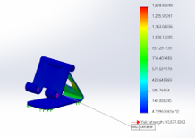
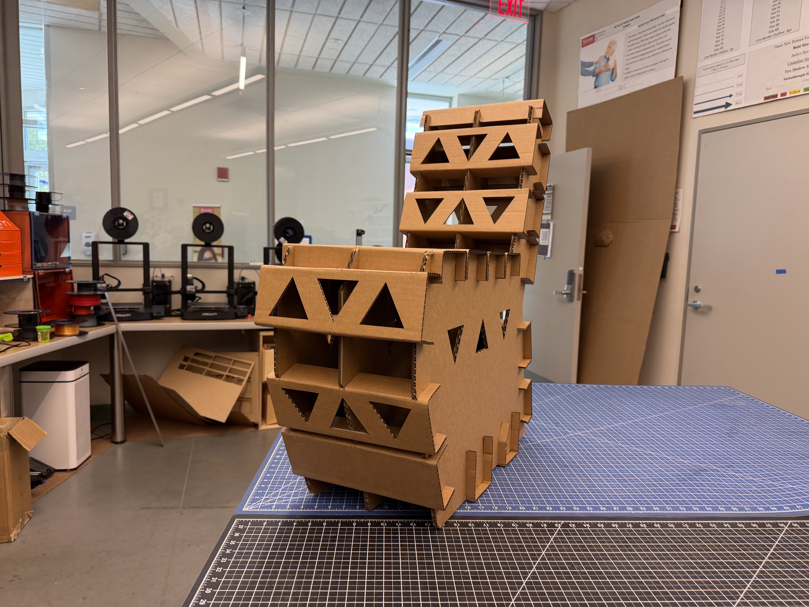
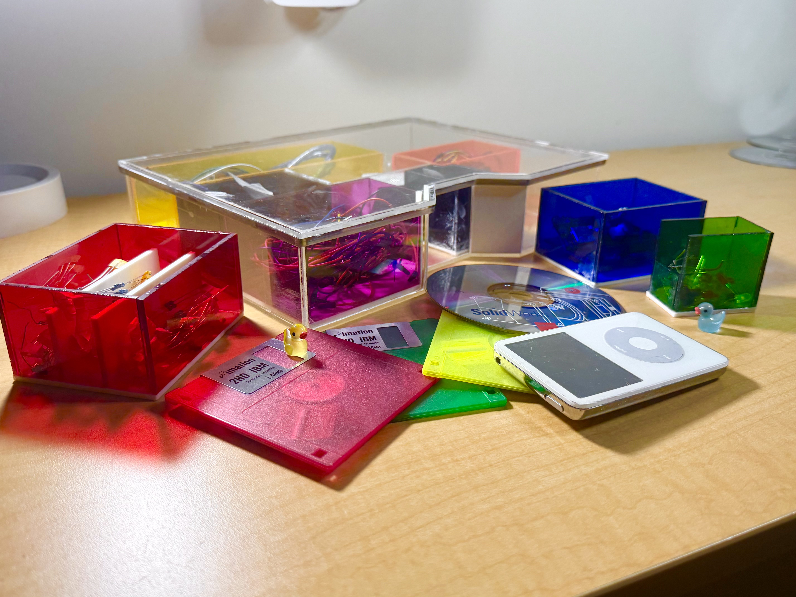
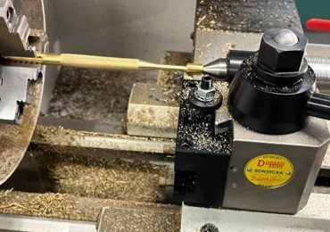
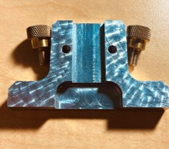
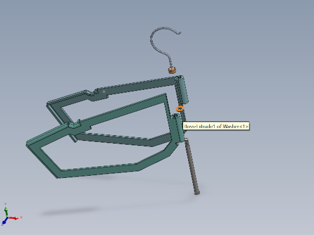
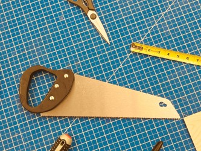
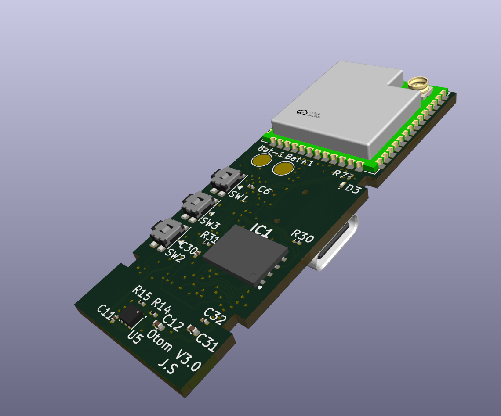
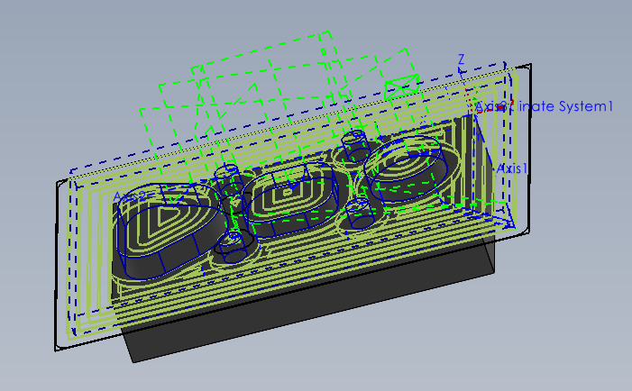
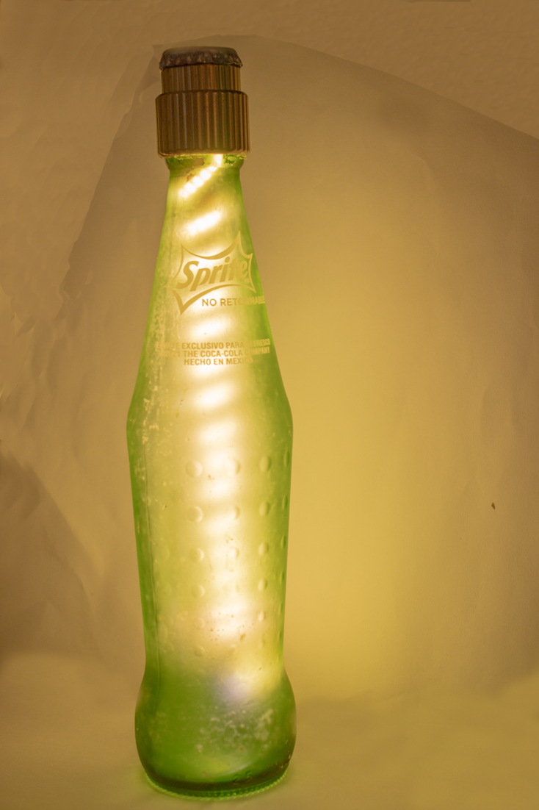

iPad Stand Redesign (FEA with SOLIDWORKS)

Cardboard Chair Project

Mechatronics Storage Project

Pinpunch (Lathe Project)

Caliper Attachment (Mill Project)

Folding Hanger Project

Saw Handle Redesign (Ergonomics)

Action Camera Project

CNC Project

(SpriteLite) Lamp Project